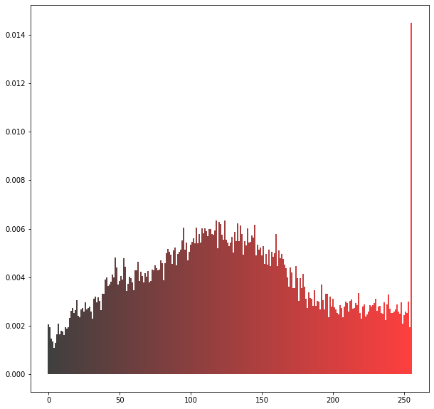
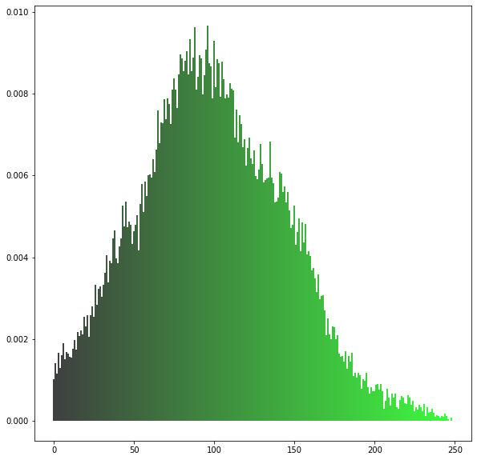
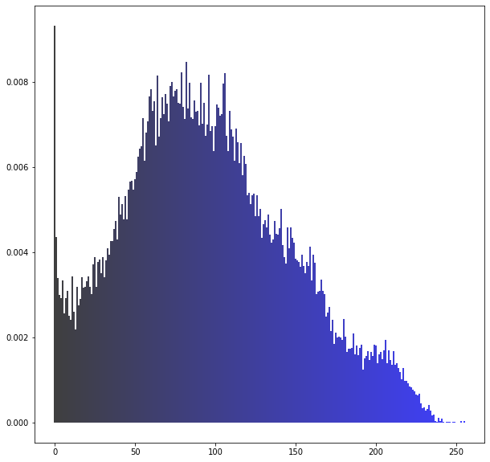
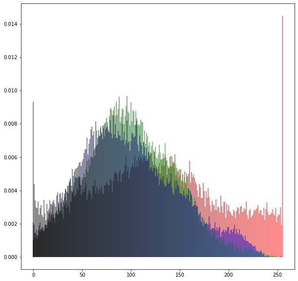
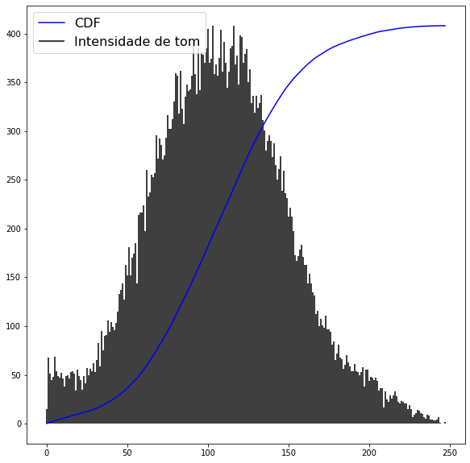
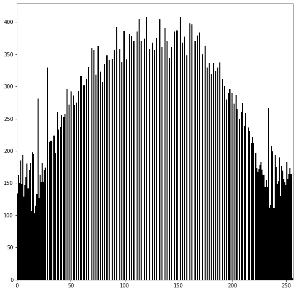
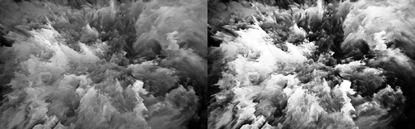
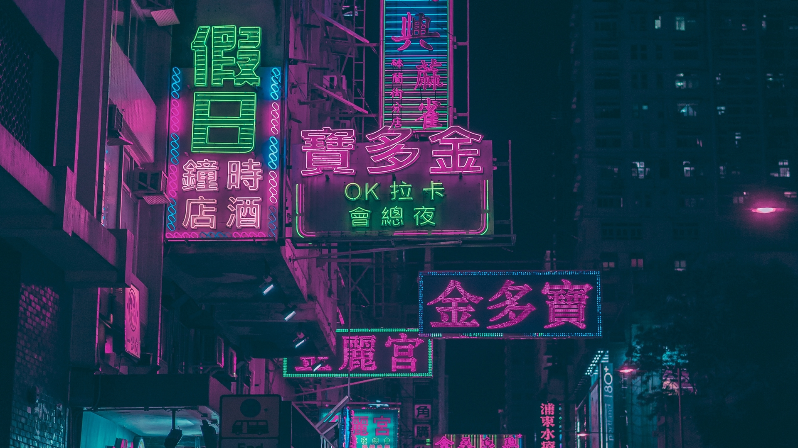
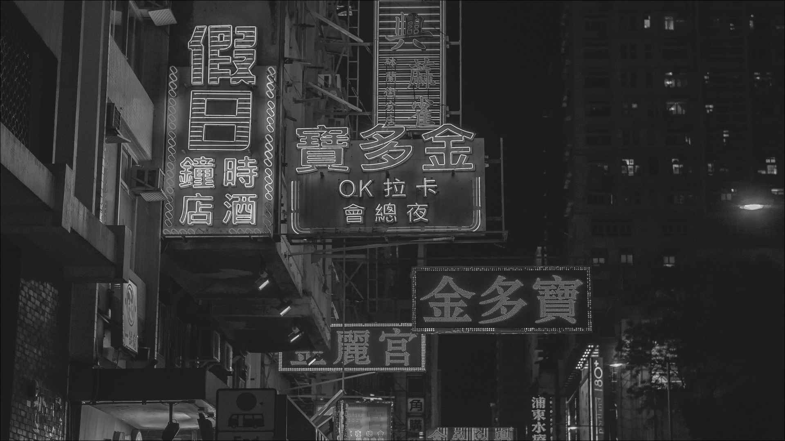

Introdução
Nesta página mostrarei os resultados dos exercícios sobre histograma de canais RGB, histograma de luminância,
equalização de histogramas e aplicação de conceitos de kernel, filtro e convolução em imagens.
Histogramas de canais



Um resultado um tanto diferente do que seria esperado pelo destaque centralizado das cores avermelhadas e alaranjadas.
União dos canais

Pela união dos canais podemos ver que a imagem possui uma vasta gama de imagens mistas.
Histogramas da intensidade dos tons de cinza


Anterior a equalização havia uma acúmulo de intensidade maior entre tons de 50 e 150.
Mas, com o histograma ja equalizado, podemos notar que as intensidades passaram a ter concentrações mais dispersas,
podendo então aumentar o contraste gerado na imagem.
Comparação

Imagem para aplicação de filtros


A imagem a ser trabalhada será apenas a que possui com tons acinzentados exclusivamente.